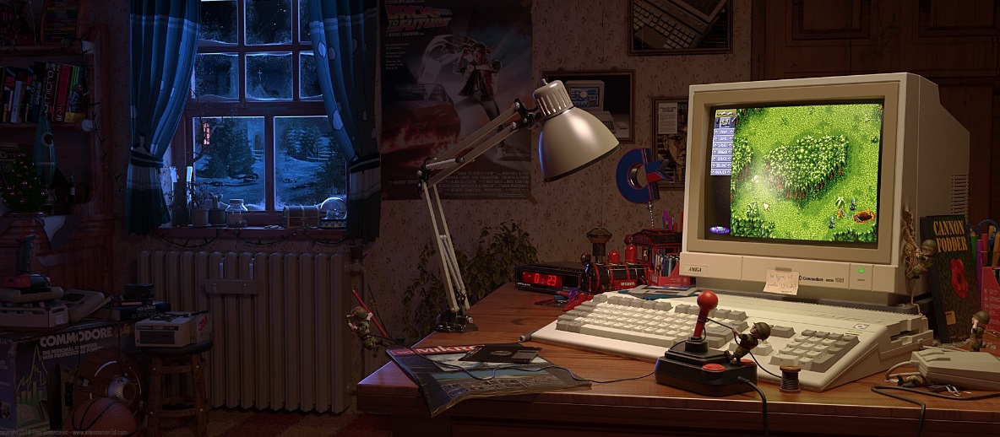

About Me
Hello World. My name is Sergio. I'm a thirty something year old mid-west husband and father of two handsome, adventurous, bright and funny boys. Family means everything to me and one of the many reasons I'm a hard worker. I do my best to stay focus and put my mind in everything I do to be able to provide to my familys every need.
Fun facts part one. I've been playing sports since as long as I can remember. The first sport I started playing was America's favorite pastime. I've played every position. By the time I was 12 I had fallen in love with basketball. Basketball is the sport that I'm best at. I have been playing in tournaments since I've been 16. I've also won many championships and also lost plenty. I'ts a life learning experience that's for sure. The years of playing in sports has taking its toll on my body and had my share of fractures, broken bones and sprained ankles. Being atheletic and playing sports has taught me responsibity and working with other as a team (together) with certain goal, anything can be acomplished, for example a championship and many memories. Me being from Chicago it's only natural that my favorite teams are Da Bulls, the Cubs and the Chicago Bears.
Fun facts part two. Being born in the early eighties I've always had an interest in tech, video games and movies. The reason I joined a coding bootcamp. To this day I still play video games from just about any gaming console (Playstation, Xbox and Nintendo Switch) taugh's popular right now. I do consider myself somewhat of a gamer. I guessing I'll never grow out of this stage. My preference of games to play are Action, Shooter, Action-adventure and Survival horror. It also allows me another way to bond with my oldest son. As far as for movies well I'm a big fanatic. I do well in movie trivias. I love anything from the eighties including the films. Here are some of the films from the eighties I love just to name a few: all John Hughes, Back to the Future, Indiana Jones, E.T. But by far the ones I hold dear are The Star Wars Saga films espcially Empire Strikes Back.